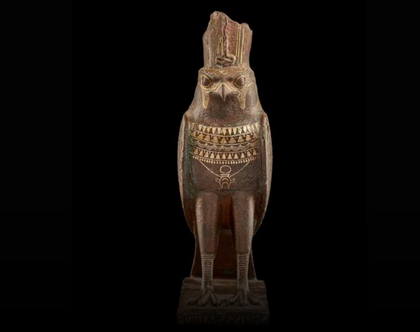
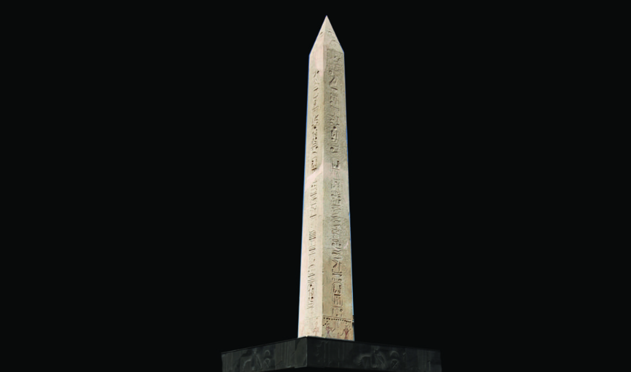
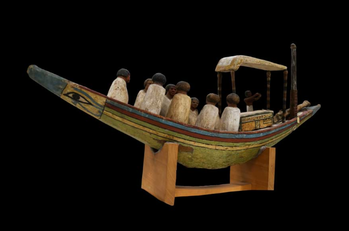
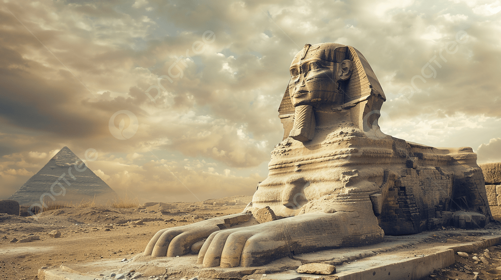
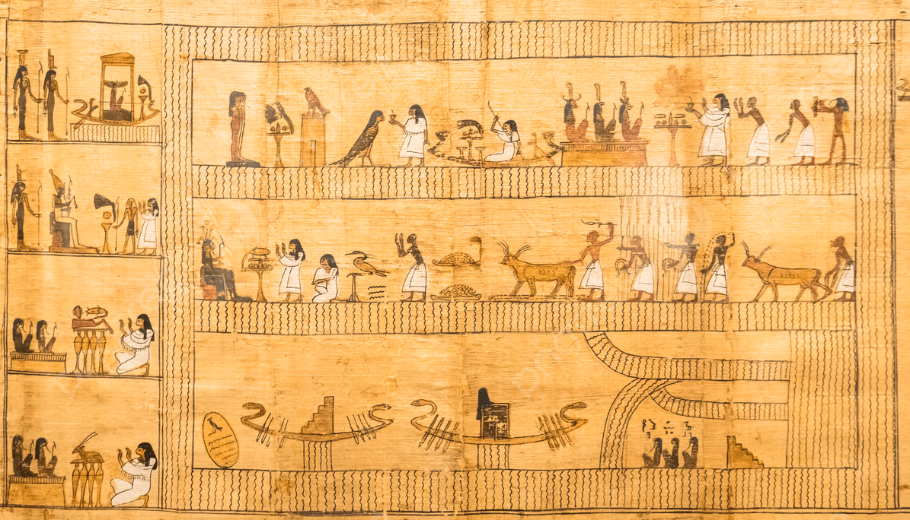
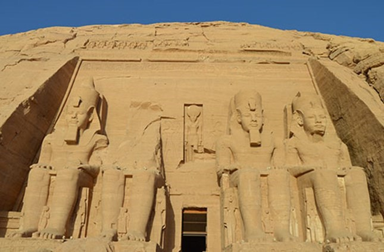
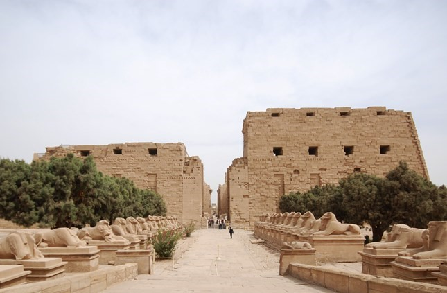
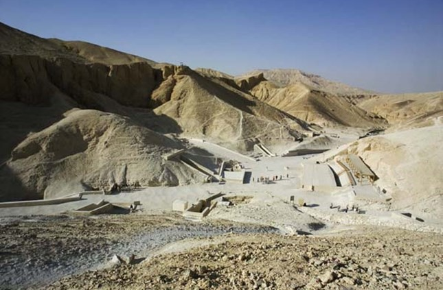

من إفتتاح المتحف المصري الكبير

تمثال صقر من البرونز المُذهب اكتُشف عام 1893 في سايس (صان الحجر) في غرب الدلتا، يؤرخ هذا التمثال لعصر الأسرة السادسة والعشرين. وقد صنع باستخدام تقنية "الشمع المفقود" وفيها يُغلف نموذج شمعي للتمثال المراد صنعه بالصلصال ثم يترك الصلصال ليجف. بعدها يتم إذابة الشمع ويُصب المعدن في قالب الصلصال المجوف، وقد غطيت بعض أجزاء هذا التمثال بقشرة رقيقة من الذهب. يصور التمثال المعبود المصري القديم حورس الذي ارتبط بالملكية وهو يرتدي تاجاً (مكسور جزئيا حاليا)، وقلادة مُذهبة عريضة تنتهي بتميمة القلب التي استخدمها ملوك مصر القدماء كرمز للمعبود حورس. والتمثال من نوع التماثيل النذرية التي كان يتم هبتها للمعبد تكريماً لمعبوداته، ورغبة من واهب التمثال في المشاركة في الطقوس الدينية بداخل المعبد. يوضح النص الموجود على قاعدة التمثال اسم واهب التمثال ويُدعى "إيمحوتب" ابن "با- دي- نيت".

تمثال صقر من البرونز المُذهب اكتُشف عام 1893 في سايس (صان الحجر) في غرب الدلتا، يؤرخ هذا التمثال لعصر الأسرة السادسة والعشرين. وقد صنع باستخدام تقنية "الشمع المفقود" وفيها يُغلف نموذج شمعي للتمثال المراد صنعه بالصلصال ثم يترك الصلصال ليجف. بعدها يتم إذابة الشمع ويُصب المعدن في قالب الصلصال المجوف، وقد غطيت بعض أجزاء هذا التمثال بقشرة رقيقة من الذهب. يصور التمثال المعبود المصري القديم حورس الذي ارتبط بالملكية وهو يرتدي تاجاً (مكسور جزئيا حاليا)، وقلادة مُذهبة عريضة تنتهي بتميمة القلب التي استخدمها ملوك مصر القدماء كرمز للمعبود حورس. والتمثال من نوع التماثيل النذرية التي كان يتم هبتها للمعبد تكريماً لمعبوداته، ورغبة من واهب التمثال في المشاركة في الطقوس الدينية بداخل المعبد. يوضح النص الموجود على قاعدة التمثال اسم واهب التمثال ويُدعى "إيمحوتب" ابن "با- دي- نيت".

شيد الملك رمسيس الثاني أكثر من عشر مسلات بمنطقة تانيس (صان الحجر) في شرق الدلتا. وتعتبر هذه المسلة التي يبلغ ارتفاعها 16 متراً هي أطول المسلات التي أقيمت في تانيس. نقشت على جوانب المسلة الأربعة اسم حورس واسم التتويج واسم الميلاد للملك رمسيس الثاني. وبفضل براعة التصميم، فقد أمكن رفع هذه المسلة التي يبلغ وزنها 87 طن على منصة مدعومة بأربعة أعمدة ضخمة، تقف على قاعدة خرسانية، لتكون بذلك أول مسلة معلقة في العالم، وليتمكن زوار المتحف المصري الكبير من رؤية خراطيش رمسيس الثاني المنحوتة في أسفل المسلة. وتقف المسلة شامخة في ساحة تبلغ مساحتها ثلاثون ألف متراً مربعاً أمام المدخل الرئيسي للمتحف المصري الكبير لتكون أول من يرحب بالزوار.

نموذج خشبي ملون لقارب جنائزي، اكتُشف في منطقة مير الأثرية في عام 1885. قائمي الدفة لهما رأس صقر، وعلى متن القارب مظلة يدعمها أربع أعمدة، وتحتها نموذج لتابوت نُقش عليه اسم "أوخ - حتب". يجلس أمام المظلة تسع تماثيل صغيرة ملتحفة بملابس بيضاء طويلة، وقد ثُبت التابوت وجميع التماثيل بالأوتاد، وطُلِيَ هيكل القارب باللون الأخضر، وسطحه باللون الأبيض الذي تزينه أشرطة حمراء، وصُورت عينا الـ "وچات" على جانبي مقدمة القارب.

هذه الصورة عالية الدقة أبو الهول المصري القديم صورة التقطها مصورون محترفون، حيث تجسّد جمال الطبيعة بألوانها النقية وتكوينها المتقن. هذه الصورة مثالية للمواقع الإلكترونية والمدونات والعروض التقديمية والحملات التسويقية

هذه الصورة عالية الدقة ورق البردي المصري القديم مع الآثار القديمة الهيروغليفية

معبد أبو سمبل الكبير، الواقع في النوبة بالقرب من الحدود الجنوبية لمصر، من بين المعالم الأكثر روعة في مصر، بناه الملك رمسيس الثاني من الأسرة التاسعة عشرة تم قطعه كاملاً في الجبل، حوالي عام 1264 قبل الميلاد. يشتهر المعبد بتماثيله الأربعة الضخمة جالسة والتي تزين واجهته، والتي انهار أحدها بسبب زلزال قديم ولا تزال بقاياه على الأرض.

معبد فيله العديد من المباني التي يعود تاريخها إلى العصر البطلمي (332-30 ق.م.)، وأبرزها ذلك المعبد الذى بدأه بطلميوس الثانى فيلادلفوس (285 – 246 ق.م.)، والذى كان مكرسًا لإيزيس أم حورس رب الملكية، وهناك منظر في الماميزي أو حجرة الولادة، حيث كان يتم الاحتفال بولادة حورس، تظهر فيها إيزيس وهي ترضع ابنها حورس في الأحراش. يعتبر معبد إيزيس واحدًا من أكثر المعابد المصرية القديمة استمرارًا؛ حيث ظل المعبد يؤدي دوره حتى عهد الملك البيزنطي جستنيان الأول (527 – 565 م) والذي أمر بإغلاق كل المعابد الوثنية، حيث نقش كاهن يدعى اسمت-اخوم آخر نص هيروغليفي ويرجع ذلك إلى القرن الرابع الميلادي (394م). تم تحويل المعبد إلى كنيسة وتم محو العديد من نقوش المعبد.

الكرنك عرف ب "إبت سوت" أو "أكثر الأماكن تميزًا"، حيث كان واحداً من أعظم المعالم الدينية والسياسية في مصر القديمة. يقع على الضفة الشرقية لنهر النيل في مدينة طيبة (الأقصر حاليًا)، كما كان مقرًا لعدد من المعابد والمقاصير. كان يُمارس في معبد آمون الكبيرالطقوس الخاصة بالمعبود آمون، الذي كان يتمتع بنفوذ كبير في مصر كمعبود رئيسي لطيبة. يعتبر هذا الموقع مركزًا للثروة والقوة، حيث كان للكهنوت سلطة سياسية هائلة.

وادى الملوك فى الأقصر دُفن معظم ملوك الأسرات الثامنة عشر والتاسعة عشر والعشرين من عصر الدولة الحديثة (حوالي 1550 - 1069 ق.م.) في وادي نهر جاف على الضفة الغربية من مدينة طيبة القديمة (الأقصر الحديثة)، ومن هنا جاء اسمه وادي الملوك، غير أن هذا الاسم ليس دقيقًا تمامًا نظرًا لأن بعض أفراد العائلة المالكة بخلاف الملوك تم دفنهم فيه، وكذلك بعض الأفراد غير الملكيين، وإن كانوا رفيعي المستوى. وينقسم وادي الملوك إلى الواديان الشرقي والغربي. يعد الجزء الشرقي الأكثر شهرة بينهما، حيث يحتوي الوادي الغربي على عدد قليل من المقابر، ويضم وادي الملوك إجمالاً أكثر من ستين مقبرة بالإضافة إلى عشرين مقبرة غير مكتملة لا تزيد عن كونها حفر.

الدير البحرى الأقصر اشتهر موقع الدير البحري باحتوائه على المعبد الجنائزي للملكة حتشبسوت (حوالي1473- 1458 ق.م) بالبر الغربي لمدينة الأقصر. ويتكون المعبد من ثلاث طبقات متدرجة في باطن الوادي، حيث كانت تقام فيه الطقوس الجنائزية لكل من الملكة حتشبسوت بالإضافة إلى أبيها الملك تحتمس الأول، حيث كانت تقدم في القرابين كي تضمن روح الملكة حياة أبدية سالمة في العالم الآخر.

دير سانت كاترين جنوب سيناء على سفوح جبل سيناء ، حيث تلقى موسى الوصايا العشر من الله ، يقع أحد أقدم الأديرة العاملة في العالم. يُعرف باسم دير القديسة كاترين ، اسمه الفعلي هو "دير الله المقدس لجبل سيناء". تم بناؤه بأمر من الإمبراطور البيزنطي جستنيان الأول (527-565 م) في 548-565 ميلادي لإيواء الرهبان الذين كانوا يعيشون في شبه جزيرة سيناء منذ القرن الرابع الميلادي.

تمثال مجموعة للقزم سنب وعائلته وجد داخل ناوس بمصطبته الجنائزية بالجيزة، وهي أول مقبرة لها سقف على شكل القبة وغرف دائرية. يُصور سنب جالساً متربعاً وبجانبه زوجته تعانقه بمودة (يدها على كتفه) وهي طبيعية الطول. ولتحقيق التناسق في التمثال قام النحات بتصوير أبنى سنب مكان رجليه ليصبح بطول زوجته. وكما فى قواعد الفن المصرى القديم صور الطفلان عراه كلا منهما يضع أصبعه السبابة فى فمه. يقف الفتى على اليسار ولونت بشرته بلون أغمق من أخته التى تقف على يساره. يذكر النقش على القاعدة وأمام المقعد أن القزم سنب كان كاهنا جنائزيا فى عصر الملكين خوفو و جدف رع ومسؤلا عن الخزانة الملكية.